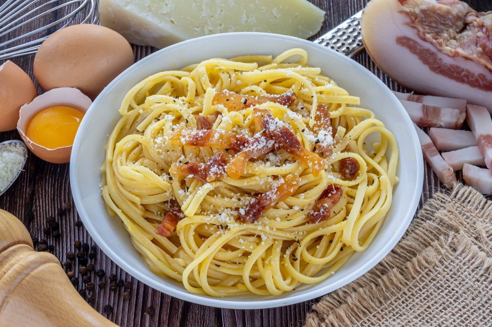

La pasta carbonara
Aprenderemos a cocinar una deliciosa Pasta a la Carbonara, acompananos

Descripcion
Hoy os enseñaremos cómo hacer los espaguetis a la carbonara mejor que en ningún restaurante, para que dominéis este plato con algunos de los trucos para que os quede perfecto.
La carbonara auténtica es una receta humilde que se hace con muy pocos ingredientes, para condimentar los espaguetis. Realmente solo lleva el guanciale -la carne de la papada de cerdo-, el queso pecorino y huevos frescos. Con eso solamente, podrás hacer esta deliciosa salsa para pasta, que se condimenta con unas vueltas del molinillo de pimienta negra y un poco más de queso rallado por encima.
Ingredientes
- 3 Yemas de huevo
- 1 huevo
- 100g panceta(Mejor si es Guanciale)
- 50gr Queso Pecorino
- Pimienta negra molida al gusto
- Sal
- Agua
- 320g Espaguetis
Pasos a seguir
- Antes de empezar a hacer esta receta italiana de espaguetis a la carbonara lo primero que hay que hacer es alistar todos los ingredientes para preparar nuestra rico plato de pasta.
- Posteriormente, pelar y picar finamente la cebolla. Y después hay que dorarla en una cucharada de mantequilla.
- A continuación, cortar en tiras la panceta ahumada o bacon y machacar los ajos previamente pelados.
- Luego llevar estos dos ingredientes de los espaguetis a la carbonara originales al fuego junto con la cebolla y sofreír.
- A continuación, hervir los espaguetis en abundante agua con sal. El tiempo de cocción dependerá del tipo de pasta, así que comprueba las recomendaciones del fabricante en el envase.
- Aparte mezclar las yemas de huevo con 100 gramos del queso parmesano que tenemos preparado y condimentar con sal y pimienta.
- Agregar la crema de leche al sofrito de los espaguetis a la carbonara con huevo y dejarlo a fuego bajo por 5 minutos para seguir con la preparación de la salsa carbonara.
- Después de ese tiempo, apagar el fuego e incorporarle la mezcla de las yemas al sofrito, revolver rápido e inmediatamente mezclar con la pasta hervida.
- ¡A disfrutar de estos espaguetis a la carbonara acompañados con el resto del queso parmesano rallado!
ES HORA DE DISFRUTAR !!